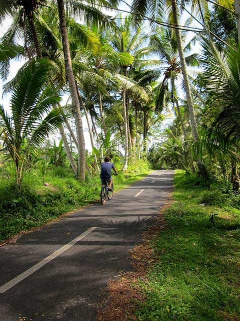

A snapper carousel with some thumbnail links.
Thumbnails are just regular links to a slide's ID attribute. The scrollbar is cropped from sight using the optional snapper_pane_crop div (only recommended when thumbnails or next/prev navigation is in play).
A snapper carousel with next/prev links automatically added through the addition of a data-snapper-nextprev attribute.
Also, this demo includes an optional ".snapper_nextprev_contain" div, which the next/prev nav will append to if present. This element wraps the scroll pane and allows you to precisely position arrows based on the height of the pane, without the thumbnails or dot nav.
This example plays nicely with CSS breakpoints to show a different number of slides depending on the viewport size. To use breakpoints in this way, for back compat, be sure to include Snap Points that correspond to the item widths. See CSS for this example
/* breakpoints example */
@media (min-width: 30em){
.snapper_item {
width: 50%;
}
.snapper_pane {
scroll-snap-points-x: repeat(50%);
}
}
@media (min-width: 50em){
.snapper_item {
width: 33.333%;
}
.snapper_pane {
scroll-snap-points-x: repeat(33.33333%);
}
}
By setting the data-snapper-autoplay attribute on the class="snapper" element to a natural number value snapper will automatically rotate through the images. The value represents a the millisecond delay between item transitions. In the example below we have data-snapper-autoplay="2000"
You can also set the attribute on snapper_item elements to get individual timing.
.revealexample .snapper_item {
width: 45%;
}
.revealexample .snapper_pane {
scroll-snap-points-x: repeat(45%);
}
A snapper carousel with data-snapper-loop will append items to either end as needed so the scroll is infinite. This is recommended for 1-slide-at-a-time carousels.